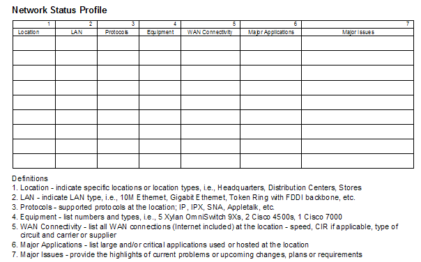

| Artifact: Current Network Profile (ARC 316) |
 |
|
| The Current Network Profile work product serves as the basis for the overall network recommendations. Since its purpose is
to provide a logical framework upon which to collect and ultimately describe many of the prime characteristics of the
network, it becomes highly valuable to the team as a way to graphically represent most of the key elements of a
network (as described above). This profile is then used with other information (interviews, network diagrams,
software/hardware configurations, other work products, etc.) to help arrive at a set of substantiated
recommendations. |
| Roles | Responsible: | Modified By: |
|---|---|---|
| Tasks | Input To: | Output From: |
| Main Description | The following information about the current (and planned) network can be gathered and presented in the form of a Current Network Profile:
|
|---|---|
| Notation | The following is an example of common ‘row/column’ headings used in the creation of Current Network Profile. This profile is assumed to be for a LAN environment. Based on the project, the network, etc., the rows/columns could change that would most reflect the network environment. For example, other column headings could refer to the network characteristics defined in the Description of this work product depending on the environment being studied.  The Current Network Profile usually is accompanied by supporting network diagrams that represent the current status and future options pictorially. |
Keep in mind that the proposal and the client issues therein should drive what data is needed for client deliverables. Also, make sure that all information necessary for analysis has been collected. It is common to find that it has not been possible to get information in some areas. Often this is because the client simply does not have the necessary data or is unable to clearly state the current or future policies or requirements. In this case, develop a set of assumptions with the client and document these within the profiles. When constructing the matrix rows/columns, the decision as to which client ‘unit’ makes the most sense needs to be determined by the consultant fairly early in the process as the amount of data collected through site visits, interviews, review of documentation, etc. plays a significant role in determining the length and thereby cost of the engagement. A useful way to accomplish validation and verification is to have a formal review session to recap the current environment and discuss indications you have received of the requirements for the new environment. This allows you to test client reactions to trial conclusions and to draw a big picture using the details you have accumulated during data gathering. |
| Impact of not having | This work product describes a great deal about the current network and any existing plans for changes to the network; in other words, it provides a ‘baseline’ or benchmark, that can be used to position lack of capabilities, capacity, function, etc. to the sponsor as part of the recommendations. If this work product was not available it would be extremely difficult to provide the ‘current’ vs. ‘future’ picture of the network plus extremely difficult to articulate the advantages of the new network design as seen by contrasting it to the current environment. |
|---|---|
| Reasons for not needing | Of all the network profile work products this is the one that has the most usefulness. It produces the most basic and common characteristics of any of the profiles, and is the basis for describing a client’s network to almost any level of client management. The only place a network consultant would possibly not create the Current Network Profile is if the network strategy, architecture, and logical design had already been created and the consultants are purely being asked for assistance in network physical level design and planning. However, even at this point the information captured in the Current Network Profile should be relevant to more technical activities (working with vendors on specific features, ‘tuning’ the network through software parameters, and even doing problem determination). |
| Guidelines | |
|---|---|
| Estimation Considerations |
| © Copyright IBM Corp. 1987, 2012 All Rights Reserved Property of IBM These materials are intended only for use as part of an IBM engagement |